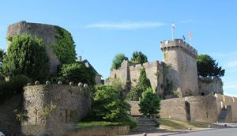
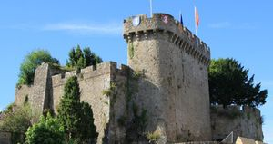
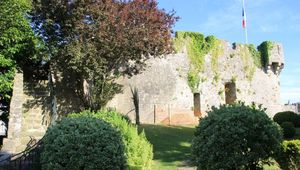
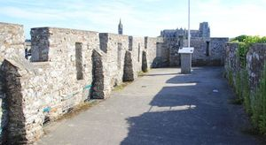
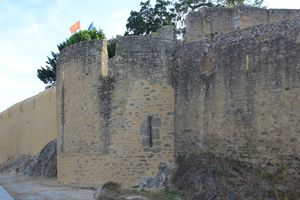
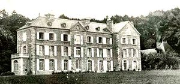
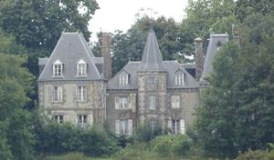
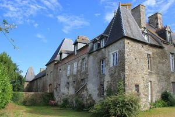
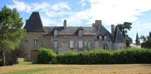

Recensement Jean-Claude Truffet
| Département | 50 — Manche |
| Canton | Avranches |
| Commune | Avranches |
| Type d'édifice | Château; vestiges forteresse |
| Période d'origine | XI-XVII |
| Coordonnées GPS | 48° 41' 13,67" Nord, 1° 21' 41,57" Ouest Apilly: 48°41'54.5"N 1°19'30.7" Ouest Champ 48°40'45.9"N 1°17'24.2" Ouest |









A Avranches vestiges de la forteresse, le château d'Apilly, le Champ du Genet et de Vains. AVRANCHES, le château a été construit vers 950 par Onfroi Le Dane, sur les vestiges de l'ancienne enceinte romaine. Situé sur un rocher, la forteresse pouvait surveiller la baie du Mont-Saint-Michel et les divers envahisseurs ne s'y trompèrent pas et l'occupèrent ; Celtes avec les Abrincates, Romains, Saxons, puis Francs. Une succession d'enceintes et de fossés y ont été ajoutés. Le donjon roman a malheureusement disparu au siècle dernier. Le haut de la courtine constitue une plate-forme au même niveau que la terrasse. Un schéma, réalisé par le chanoine Pigeon, montre de quelle manière le donjon et la courtine étaient reliés. A Avranches les vestiges et château du Champs du genet, il est impossible d'accéder à la terrasse depuis l'intérieur de la bâtisse. Des passages ont été obstrués après un affaissement du niveau supérieur de l'édifice, à une époque indéterminée. Aujourd'hui, au sommet d'un mur de courtine crénelé, on découvre un panorama sur la baie et la vallée de la Sée, au cur des différents quartiers Avranchinais.
APPILY Le comte Jean-Baptiste du Quesnoy, seigneur d'Apilly, y meurt le 7 août 1768, à 69 ans. Hervé de Saint-Germain y réside au XIXe siècle. Arthur Gustave de Clinchamp, officier de cavalerie, commandant le 1er bataillon des mobiles de la Manche, s'y marie le 19 octobre 1863, avec Charlotte Saint-Germain du Houlme, et leur fille Geneviève de Clinchamp y naît le 17 novembre 1864. La comtesse Edna de Clinchamp, née Lewis, y meurt le 29 août 1932, à 49 ans.En 1943, fuyant les bombardements sur Cherbourg, une centaine d'élèves de l'école du Sacré-Cur s'y réfugient, jusqu'à leur retour à Cherbourg en août 1944.
DONJON d'AVRANCHES, aurait été construit au commencement du XIe siècle, lors de l'installation du premier comte, Robert d'Avranches, fils illégitime du Duc Richard Ier. Élevé sur les restes d'un castellum romain, il n'avait pas de fonction résidentielle, vu ses dimensions peu considérables (relevées par le chanoine Pigeon vers 1880-1890). Le donjon a été traversé, en 1848, par une rue nouvelle prolongeant la rue d'Office, devenue, aujourd'hui, la rue de la Belle-Andrine. Ce qu'il restait ce qui subsistait du donjon s'est effondré en 1883. Une courtine, située entre le donjon roman disparu et la Tour du Promenoir, ornée de créneaux au début du XXe siècle, est souvent présentée à tort comme l'ancien donjon. Éléments protégés MH : la tour située derrière l'Hôtel de Ville : inscription par arrêté du 14 mai 1937. A deux K.M au nord à St-Senier sous Avranches le château D'APILLY, le château est gravement endommagé en 1944 par un incendie accidentel provoqué par des occupants américains, après la libération. "et de CHAMP du GENET Chambres d'hôtes. A un K.M. au nord ouest à Vains VAINS, manoir, est une de ces demeure du XVIIe siècle, qui succédèrent aux forteresses du Moyen-Age. C'est une de ces habitations du seigneur devenu homme de cour, comme le manoir de la Champagne. Les tours ont disparu, et ont été remplacées par le pavillon carré au toit aigu et aplati. Le fossé est moins profond, le pont-levis a fait place au pont dormant, la meurtrière est devenue une fenêtre, la porte étroite, devenue porte d'honneur, s'est agrandie en s'exhaussant sur son perron. Cette transformation éclate dans l'équipement militaire du noble au XVIIe siècle. Vains a eu ses seigneurs, en 1197 le seigneur était Robert de Verni. Radulfus de Veim est souscrit à la charte de donation du Fougerai, en Bacilly, en 1186. A la fin du XIIIe siècle, Raoul de Théville, évêque d'Avranches, était seigneur de Vains. Éléments protégés MH : le logis ; la chapelle ; le bâtiment dit corps de garde : inscription par arrêté du 27 décembre 1994.
Comte, Robert d'Avranches
"
A Avranches vestiges de la forteresse grav 1 à 5 le château d'Apilly grav 6, le Champ du Genet grav-7 et Vains grav 8-9 Avranvches GPS : 48° 41' 13,67" Nord, 1° 21' 41,57" Ouest Apilly: 48°41'54.5"N 1°19'30.7" Ouest Champ 48°40'45.9"N 1°17'24.2" Ouest